Generated input
Directional Wave Seed Surface
Layer directional wave seeds into displacement and slope inputs before the full FFT cascade takes ownership.
Three r185.1 · Native WebGPU/TSL
Expert skills for WebGPU rendering, procedural worlds, and final-image pipelines, with declared labs and explicit evidence status.
Open a live WebGPU demo, then read the full skill for architecture, budgets, failure conditions, and validation.
Layer directional wave seeds into displacement and slope inputs before the full FFT cascade takes ownership.

Project crater masks onto a sphere and inspect relief before moving to cube-sphere quadtree LOD.

Drive terrain height, material response, and placement from one coherent biome field.

Turn one authored lava cause into PBR crust, normal relief, and raw HDR emission.

Feed deterministic caustic fields into bounded water and inspect the floor-lighting response.

Shape cloud density and erosion with generated weather maps across final and diagnostic views.

Use crystal structure maps to control frost tint, refraction, and thaw diagnostics.

Compare ripple-normal variants as wet asphalt responds to rain and changing light.

Wrap a bounded lensing proxy in repeatable star tiles and inspect the curved-ray direction field.

Translate meadow density into placement, path clearing, flower tint, and LOD response.
Start with the decision in front of you, then move from the relevant guide cluster into skills, demos, and evidence.
Match the pack to your role, workflow, and the work it should not own.
Evaluate named options and total cost before committing to an implementation route.
Start cleanly with the pack or move an existing workflow without hiding the transition cost.
Start from real workload, interaction, and performance constraints rather than a generic role.
Start with the visual system, not a directory of techniques. The routing skill selects the smallest expert set, names shared signals and final-output ownership, then points to declared primary targets and their current evidence reports.
The registry declares 40 primary targets with canonical source and published entrypoints. That is not an acceptance claim: 25 suites are accepted; 15 still require their declared capture, timing, lifecycle, or visual proof.
canonical28skill-owned labs built from native sourcesupport7focused integrations and mechanism benchesstartup contracts493157 scenarios · 220 mechanisms · 116 tierspreserved48secondary records, none counted as primary proofrendererr185.1exact Three.js revision across the matrixtoolchain8.1.3Vite · Playwright 1.61.1Name the visual target, platform, frame budget, and constraints.
Route across domains without duplicating renderers, passes, or temporal state.
Reuse source and contracts, then check each target's current evidence report.
Open a target to inspect its published entrypoint and declared fixed states. “Evidence pending” means its required v2 proof has not earned acceptance. Inspect all 40 evidence reports.
The registry declares 28 canonical labs, including rendering targets and the non-rendering Debugging suite.

Three.js Compatibility Fallbacks
7 scenarios · 6 mechanisms · 0 tiers
Three.js Debugging
7 scenarios · 5 mechanisms · 0 tiers Canonical capture Accepted evidence published878849be345c source hash
16 fixed states · 6 runtime proof requirements
Canonical labAccepted
Bloom
6 scenarios · 6 mechanisms · 4 tiers Canonical capture Accepted evidence published29d2b3162053 source hash
15 fixed states · 5 runtime proof requirements
Canonical labAccepted
Procedural Geometry
6 scenarios · 6 mechanisms · 3 tiers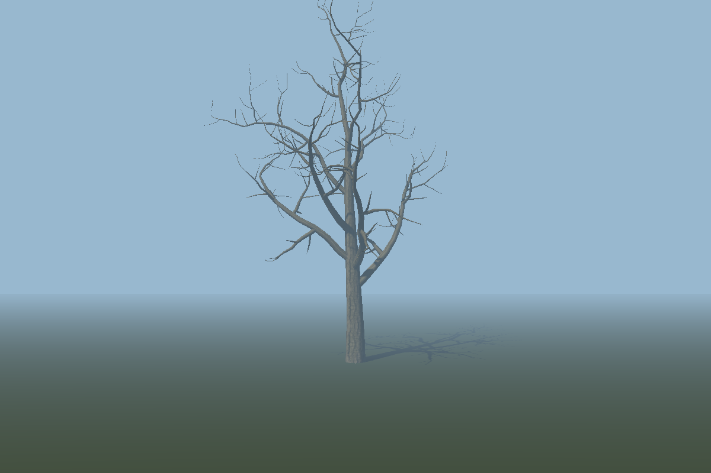
Procedural Vegetation
6 scenarios · 4 mechanisms · 3 tiers Canonical capture Accepted evidence publishedc0bee8cf5535 source hash
16 fixed states · 9 runtime proof requirements
Canonical labAccepted
Curved-Ray Space Effects
6 scenarios · 6 mechanisms · 4 tiers Canonical capture Accepted evidence publishedf09b1846e653 source hash
15 fixed states · 7 runtime proof requirements
Canonical labAccepted
Procedural Materials
6 scenarios · 6 mechanisms · 3 tiers Canonical capture Accepted evidence publishedfb62459b213a source hash
11 fixed states · 6 runtime proof requirements
Canonical labAccepted
Water Optics
1 scenarios · 6 mechanisms · 4 tiers Canonical capture Runtime evidence pendingcb4d3abfaab1 source hash
21 fixed states · 9 runtime proof requirements
Canonical labEvidence pending
Scalable Real-Time Shadows
9 scenarios · 9 mechanisms · 3 tiers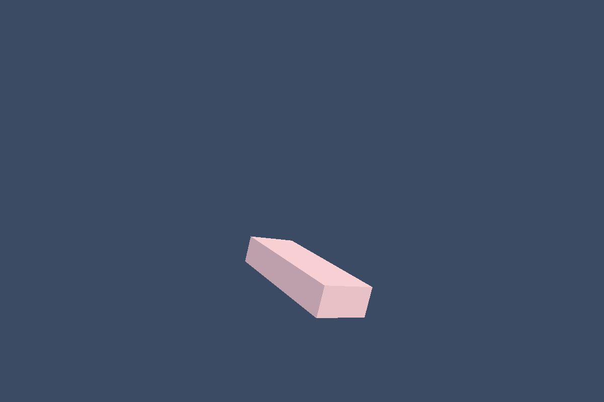
Camera Controls And Rigs
1 scenarios · 6 mechanisms · 3 tiers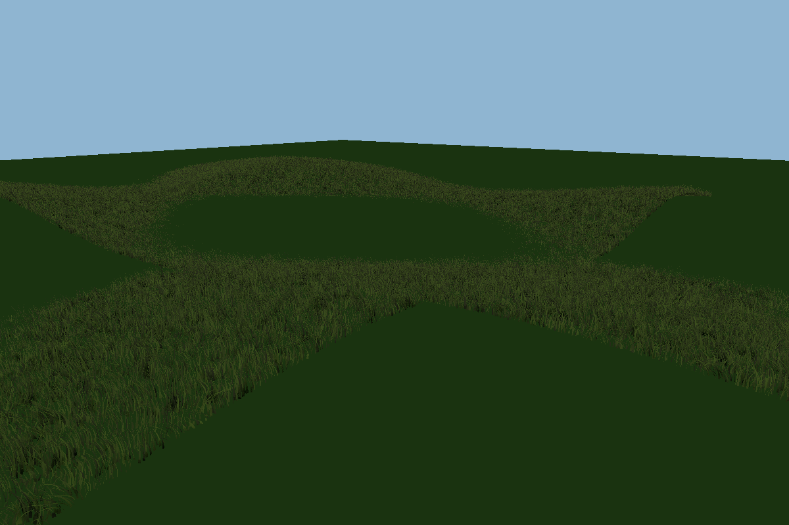
Procedural Vegetation
7 scenarios · 3 mechanisms · 4 tiers Canonical capture Accepted evidence publishedf238d4795026 source hash
14 fixed states · 3 runtime proof requirements
Canonical labAccepted
Exposure And Color Grading
5 scenarios · 6 mechanisms · 3 tiers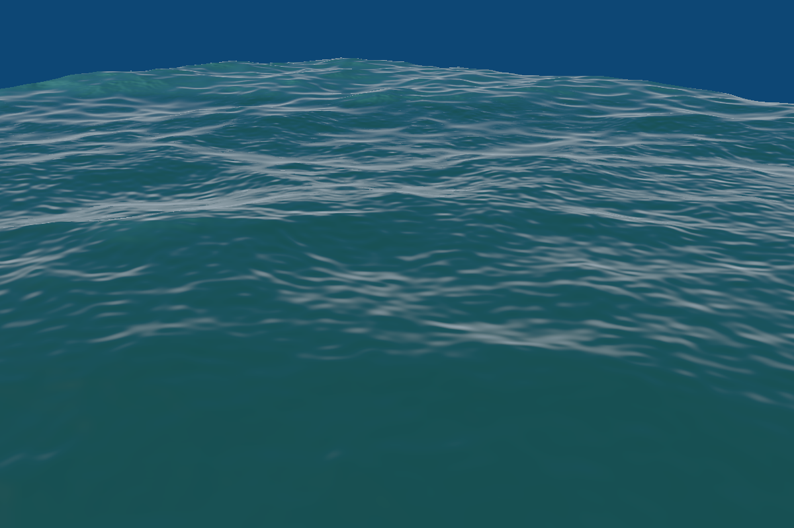
Spectral Ocean
1 scenarios · 6 mechanisms · 4 tiers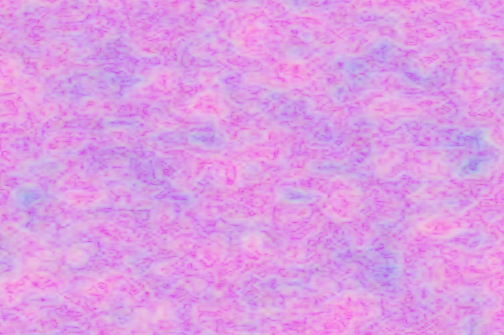
Procedural Fields
6 scenarios · 6 mechanisms · 3 tiers Canonical capture Runtime evidence pending367f880e1d52 source hash
10 fixed states · 8 runtime proof requirements
Canonical labEvidence pending
Image Pipeline
1 scenarios · 6 mechanisms · 3 tiers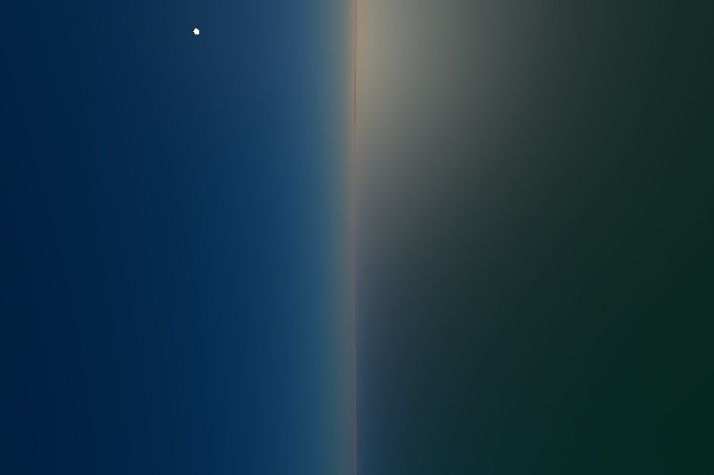
Sky, Atmosphere, and Haze
6 scenarios · 6 mechanisms · 3 tiers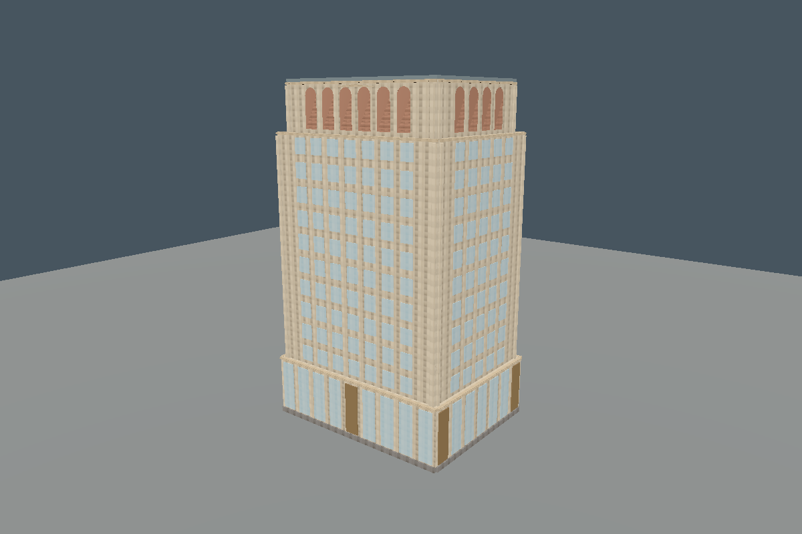
Procedural Buildings and Cities
6 scenarios · 6 mechanisms · 3 tiers Canonical capture Accepted evidence publishedd151b7e9512b source hash
16 fixed states · 6 runtime proof requirements
Canonical labAccepted
Ambient Contact Shading
7 scenarios · 6 mechanisms · 3 tiers Canonical capture Runtime evidence pendinga619e33bbaac source hash
11 fixed states · 9 runtime proof requirements
Canonical labEvidence pending
Three.js Object Sculptor
3 scenarios · 5 mechanisms · 3 tiers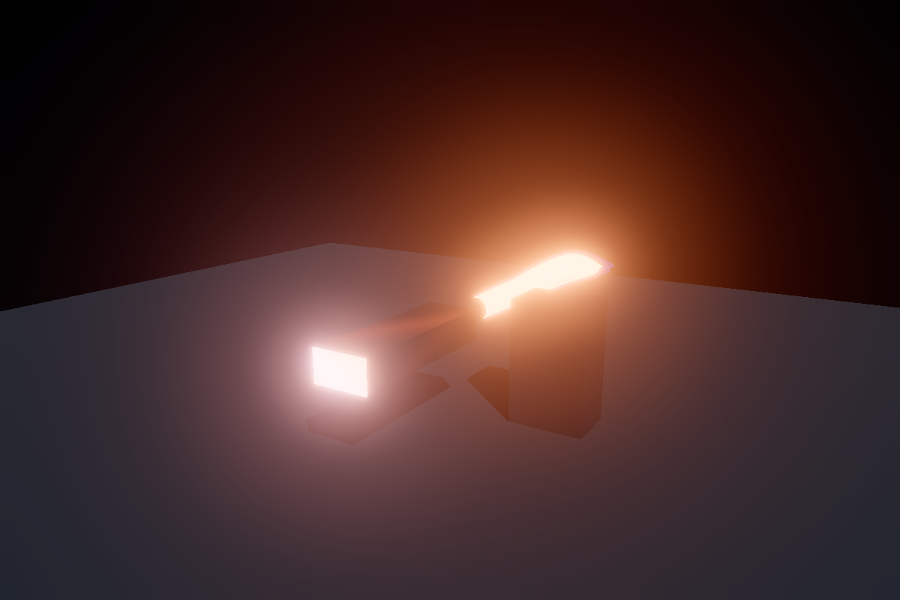
Representation-First Particles, Trails, and Effects
7 scenarios · 7 mechanisms · 3 tiers Canonical capture Accepted evidence published66a3fc6e27a7 source hash
18 fixed states · 6 runtime proof requirements
Canonical labAccepted
Procedural Creatures
7 scenarios · 8 mechanisms · 3 tiers Canonical capture Runtime evidence pending75dc31ba17b9 source hash
12 fixed states · 7 runtime proof requirements
Canonical labEvidence pending
Procedural Motion Systems
3 scenarios · 6 mechanisms · 3 tiers
Procedural Planets
7 scenarios · 7 mechanisms · 3 tiers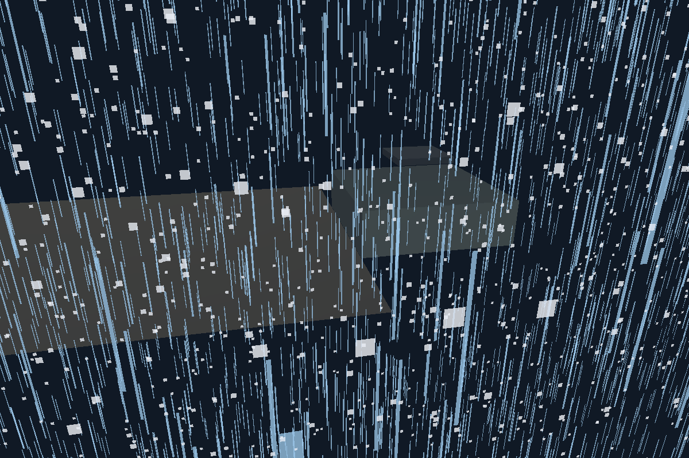
Rain, Snow, and Wet Surfaces
1 scenarios · 6 mechanisms · 3 tiers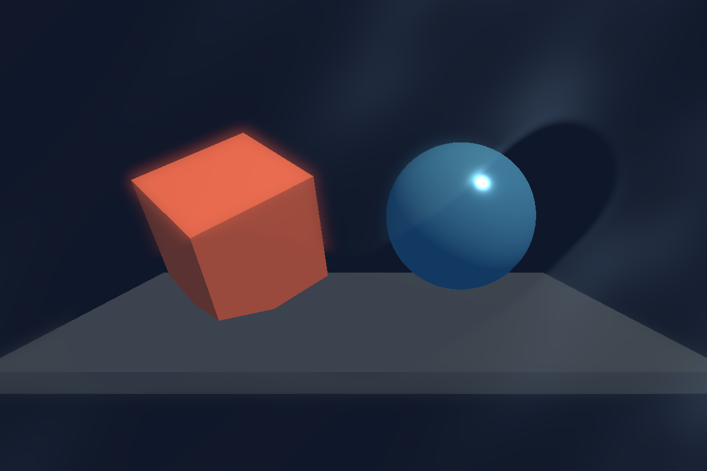
State-Transition Dynamic Surface Effects
1 scenarios · 6 mechanisms · 3 tiers Canonical capture Accepted evidence published23543812e0d4 source hash
11 fixed states · 6 runtime proof requirements
Canonical labAccepted
Three.js Object Sculptor
3 scenarios · 5 mechanisms · 3 tiers
Visual Validation
8 scenarios · 6 mechanisms · 5 tiers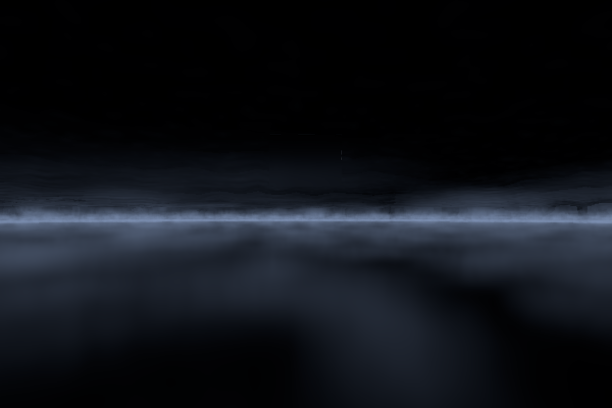
Volumetric Clouds
4 scenarios · 7 mechanisms · 4 tiersThe five ownership-critical scenes where independent systems must compose without duplicate render, signal, tone-map, or output owners.
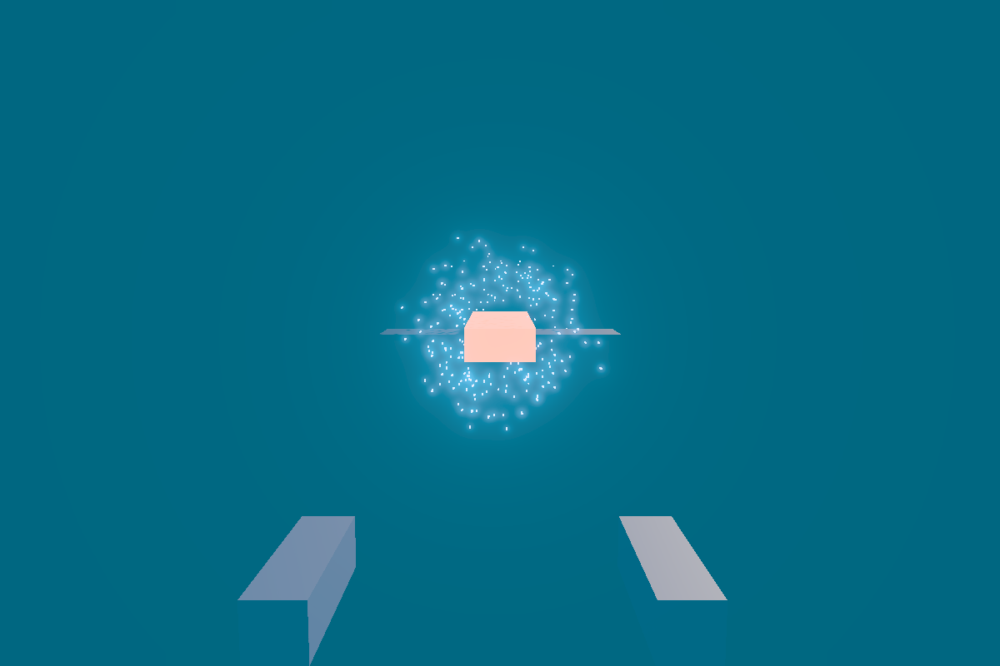
Image Pipeline
1 scenarios · 6 mechanisms · 3 tiers Canonical capture Runtime evidence pending76b06d2596d9 source hash
10 fixed states · 5 runtime proof requirements
IntegrationEvidence pending
Image Pipeline
1 scenarios · 6 mechanisms · 3 tiers Canonical capture Runtime evidence pending3c2448b5b07d source hash
10 fixed states · 4 runtime proof requirements
IntegrationEvidence pending
Image Pipeline
1 scenarios · 6 mechanisms · 3 tiers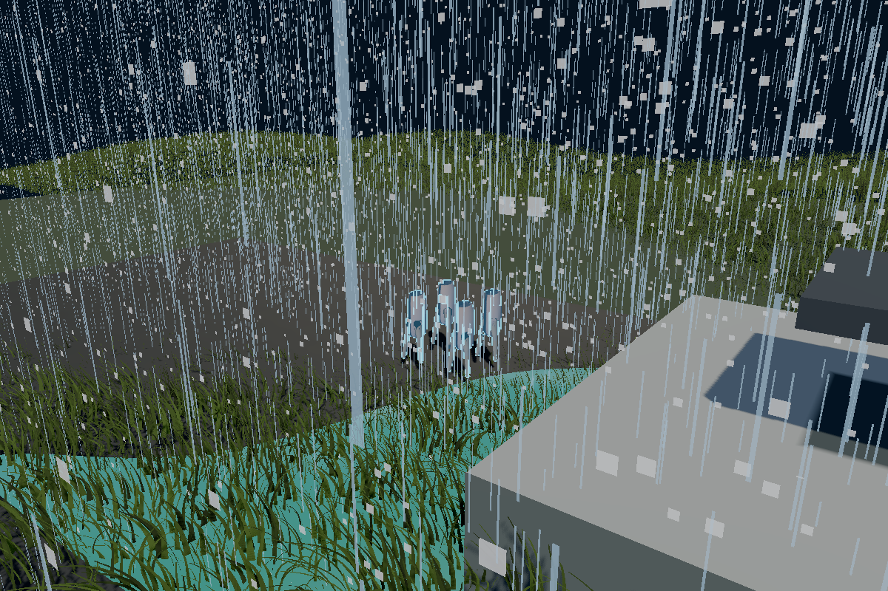
Image Pipeline
1 scenarios · 5 mechanisms · 3 tiers Canonical capture Runtime evidence pendinge2e9d6b673af source hash
10 fixed states · 4 runtime proof requirements
IntegrationEvidence pending
Image Pipeline
1 scenarios · 6 mechanisms · 3 tiersFive focused integration hosts and two mechanism benches that prove temporal, AO, vegetation, precipitation, and shadow composition.
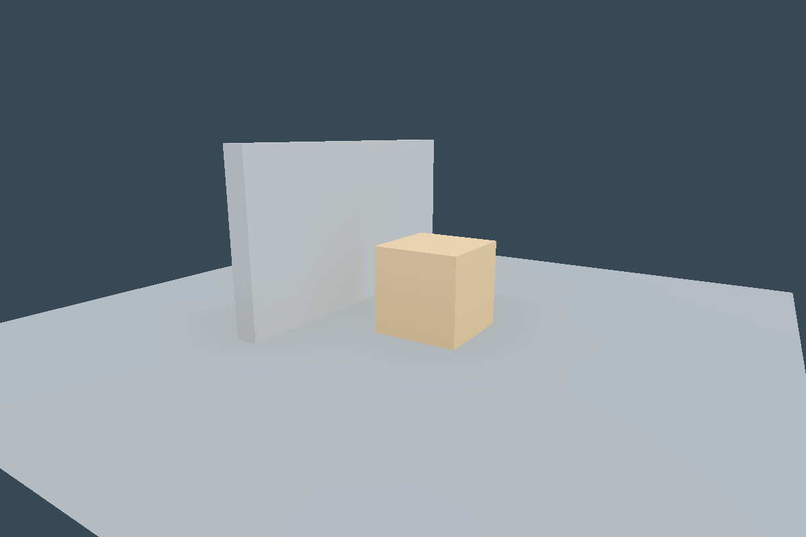
Ambient Contact Shading
2 scenarios · 3 mechanisms · 3 tiers Canonical capture Runtime evidence pending0fc92e2616bf source hash
9 fixed states · 3 runtime proof requirements
IntegrationEvidence pending
Rain, Snow, and Wet Surfaces
2 scenarios · 4 mechanisms · 3 tiers Canonical capture Runtime evidence pendingd127b9a71d8a source hash
10 fixed states · 3 runtime proof requirements
IntegrationEvidence pending
State-Transition Dynamic Surface Effects
2 scenarios · 5 mechanisms · 3 tiers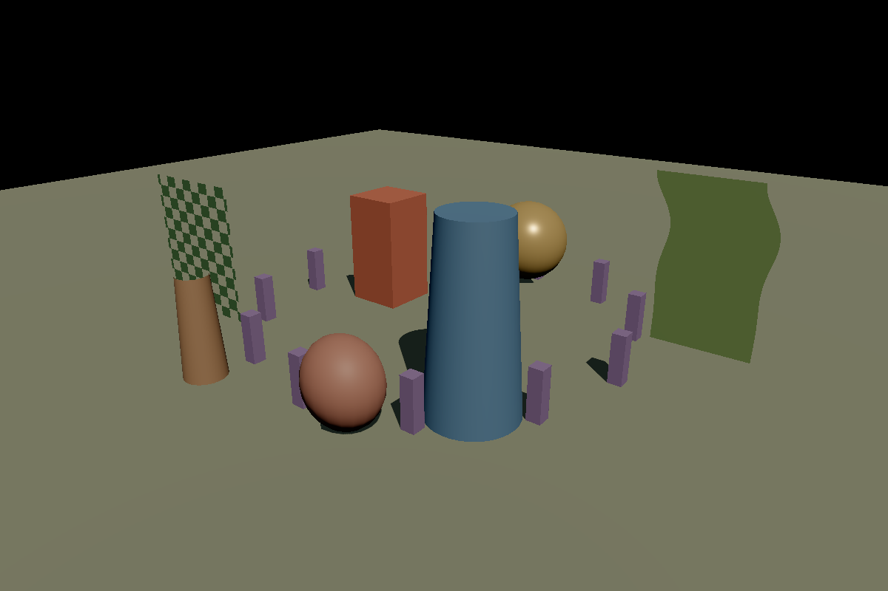
Scalable Real-Time Shadows
4 scenarios · 4 mechanisms · 1 tiers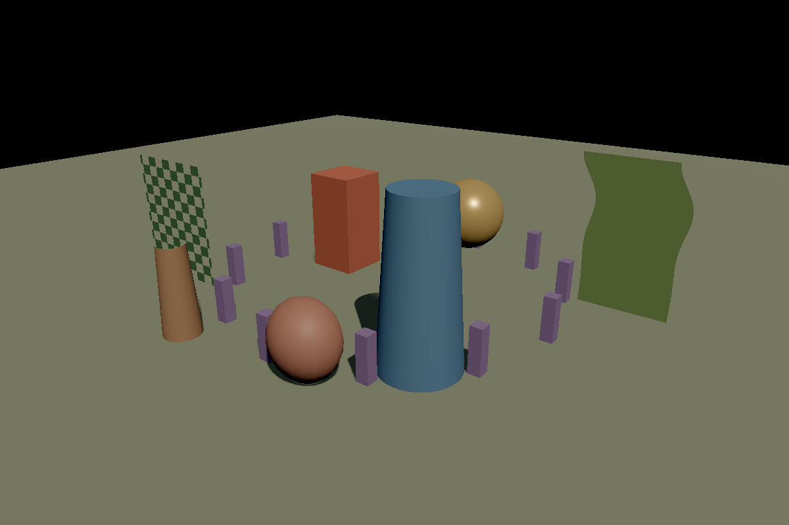
Scalable Real-Time Shadows
1 scenarios · 3 mechanisms · 1 tiers Canonical capture Accepted evidence published2f41080c1ecb source hash
3 fixed states · 4 runtime proof requirements
Mechanism benchAccepted
Image Pipeline
1 scenarios · 1 mechanisms · 1 tiers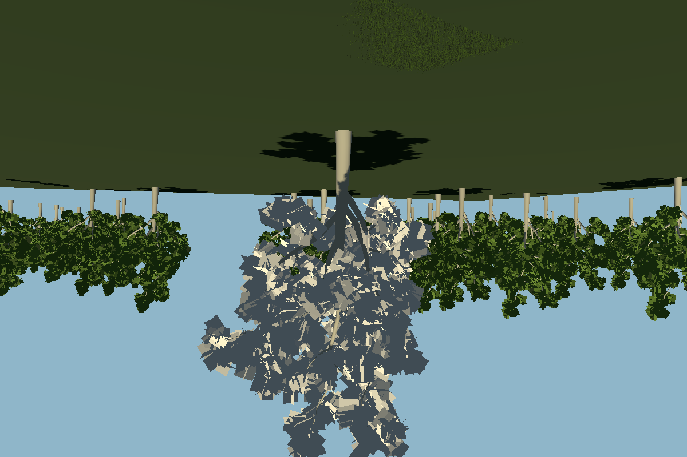
Procedural Vegetation
2 scenarios · 3 mechanisms · 3 tiersEach skill owns a bounded technical domain and explains when to use it, what it costs, what it shares, and how it fails.
Route requests to the right experts, diagnose version-dependent failures, and prove results with reproducible evidence.
Route multi-system Three.js WebGPU/TSL work to the smallest causal skill set. Use when a request spans multiple systems, needs shared pass/output ownership, or needs scene-wide performance coordination.
Accepted evidenceDiagnose unexpected Three.js WebGPU/TSL runtime, rendering, API, asset, or version behavior. Use for a concrete failure, a suspected upstream regression or known issue, or a choice among an application fix, released upgrade, bounded workaround, upstream report, and blocker.
Accepted evidenceValidate Three.js WebGPU/TSL implementations against falsifiable claims. Use for visual or mechanism correctness, temporal behavior, target performance or GPU attribution, resource ownership, and lifecycle stability.
Accepted evidenceFallback unavailable WebGPU features through an isolated compatibility branch. Use only when the user explicitly asks how to handle an initialized non-WebGPU backend; then classify canonical behavior as preserved, weakened, or removed.
Who owns depth, tone mapping, and the last pass determines the difference between a demo and an image.
One-writer camera rigs for Three.js WebGPU. Use for bounds-derived perspective or orthographic framing; control and cinematic handoffs; temporal jitter and reset ownership; or camera-relative large-world coordinates.
Native evidence pendingFit scalable directional cast shadows in Three.js r185 WebGPU/TSL. Use when choosing one bounded shadow, CSM, tiled arrays, or cached clipmaps; stabilizing projection, filtering, or bias; or fixing invalidation, caster parity, bindings, or sustained cost.
Accepted evidenceGround indirect lighting with ambient visibility in Three.js r185 WebGPU/TSL. Use when choosing authored material AO, dynamic GTAO, forward-lighting placement, reduced-resolution reconstruction, temporal AO, or bent normals.
Accepted evidenceBloom scene-linear HDR in Three.js WebGPU/TSL. Use when choosing optical full-scene glare, selective or hybrid contributors, transparent contribution blending, or viewport, exposure, and performance gates for BloomNode.
Accepted evidenceMeter and grade scene-linear Three.js WebGPU images. Use for choosing fixed or automatic exposure; adapting EV on the GPU; assigning tone-map and output conversion; or placing and validating 3D LUTs.
Native evidence pendingCoordinate Three.js WebGPU/TSL final-image graphs. Use when effects share scene-pass signals or output ownership, when choosing MRT versus reconstruction or narrow passes, when admitting temporal history, or when whole-graph budgets and lifetimes decide the design.
Skies, oceans, weather, and water that share causes instead of fighting each other.
Build sky, atmosphere, and haze in Three.js WebGPU/TSL. Use for authored sky/fog, planetary scattering, depth-aware aerial perspective, or atmosphere-derived sun/sky lighting.
Accepted evidenceBuild volumetric clouds in Three.js WebGPU/TSL. Use for weather-shaped density, bounded cloud raymarching, cloud optical-depth shadows, cloud-specific temporal reconstruction, or causal cloud precipitation emission.
Native evidence pendingSynthesize broad-band offshore seas with spectral FFT cascades in Three.js WebGPU/TSL. Use for homogeneous directional wind sea or swell, transported foam history, bounded CPU surface queries, or offshore forcing of a separate coastal model.
Accepted evidenceSolve bounded and coastal water in Three.js WebGPU/TSL. Use for parametric waves, local heightfields, bathymetric wave transport, wet/dry shallow water, two-way body coupling, external free-surface presentation, or water optics and offshore handoffs.
Native evidence pendingCouple Three.js WebGPU/TSL rain, snow, and wet surfaces. Use for airborne precipitation motion, physical surface deposition, persistent snow or wetness state, weather-driven ripple normals, or impact splashes.
Fields, materials, geometry, object reconstruction, buildings, planets, vegetation, and creatures as authored systems, not noise soup.
Procedural fields for coherent scalar and vector causes in Three.js WebGPU/TSL. Use when a task needs shared causes across materials, geometry, or compute; must choose direct evaluation versus a baked field; needs deterministic CPU/TSL parity and footprint filtering; or needs metric signed-distance terrain and coast analysis.
Accepted evidenceProcedural materials for coherent NodeMaterial PBR systems in Three.js WebGPU/TSL. Use when a task needs shared identities across PBR channels, must select UV, array, atlas, or projected mapping, needs footprint-filtered normals and specular AA, or needs dynamic per-instance material state with explicit output ownership.
Accepted evidenceProcedural geometry compilation for Three.js WebGPU/TSL. Use when a task needs an indexed mesh writer, contour-derived terrain or terraces, profile or branch sweeps, or a BatchedMesh, InstancedMesh, or dynamic-update decision.
Native evidence pendingSculpt reference-image objects into procedural Three.js models. Use for reconstruction feasibility, procedural build planning, code-native implementation, or animation-, collider-, and destruction-ready structure from one or more object views.
Native evidence pendingCompile procedural buildings, cities, and semantic site assemblies in Three.js r185 WebGPU/TSL. Use for building massing and facades, city-scale architectural batching and LOD, or deterministic placement of heterogeneous site assets around architecture.
Native evidence pendingScale procedural planetary bodies in Three.js r185 WebGPU/TSL. Use when global curvature needs a cube-sphere quadtree, a sustained ground view needs a tangent clipmap, an orbit-to-ground transition needs both, or a gas-giant cloud deck needs body-scale band fields.
Accepted evidenceCompile procedural vegetation for Three.js WebGPU/TSL. Use for dense grass and ground-cover populations, structured tree growth and rooted wind, or terrain-aware ecological placement.
Accepted evidenceCompile procedural creatures for Three.js WebGPU/TSL. Use for generated body surfaces, semantic rigs or creature locomotion, or repeated procedural populations.
Kinematics, particles, surface history, and spacetime with frame-rate-independent discipline.
Animate semantic state with deterministic Three.js WebGPU/TSL motion. Use for launch or staging kinematics, seekable transform timelines, recurrent fixed-step motion, frame-rate-independent follow, GPU-resident instance motion, moving-frame docking or reparenting, and environment-driven actors.
Native evidence pendingRepresentation-first Three.js WebGPU/TSL particles, trails, and effects. Use for analytic or recurrent particle motion, stable-slot or scan-compacted GPU pools, flow-conforming shells and wakes, dissolving debris, or effect-specific HDR and depth integration.
Native evidence pendingState-transition screen-space surface effects for Three.js WebGPU/TSL. Use for persistent touch, frost, or thaw history; full-field or sparse accumulation; static crystalline fields; reduced-resolution blur; or history-gated normal refraction.
Accepted evidenceBuild curved-ray space effects in Three.js WebGPU/TSL. Use for artistic ray bending, Ellis wormholes, Schwarzschild black-hole lensing, accretion disks, physical thin-disk transport, or requests that need the Kerr/rotating-black-hole support boundary.
The schema-v2 contract separates what was authored, derived, measured, and gated; its verdicts cannot collapse missing GPU timing or mechanism proof into an aggregate pass.
numeric provenanceAuthored · Derived · Measured · Gated. Every normative number names where it came from.
claim verdictsPASS · FAIL · INSUFFICIENT_EVIDENCE · NOT_CLAIMED. Silence cannot masquerade as success.
bundlePipeline, timing, resources, bandwidth, errors, lifecycle, mechanisms, and the exact visual contract travel together.
readbackOdd-size and padded-row tests prevent valid WebGPU frames from becoming striped or falsely nonblank PNGs.
single-owner graphlifecycleCreate, render, resize, switch mode and tier, then dispose. The result is measured repeatedly rather than inferred from one clean frame.
mutationsBad stride, duplicate owners, false diagnostics, self-comparison, leaked storage, and missing timestamps are blocking cases.
Install once, then let the router select only the expert skills relevant to your scene.
List the pack, then install all top-level skills for your agent.
npx skills@latest add linegel/threejs-complete-set-of-skill --list
npx skills@latest add linegel/threejs-complete-set-of-skill --skill '*'Use the open skills installer to list the pack, then install every skills/threejs-* directory as one coherent graphics skill pack for your selected agent.
npx skills@latest add linegel/threejs-complete-set-of-skill --list
npx skills@latest add linegel/threejs-complete-set-of-skill --skill '*'Install through skills CLI, or symlink/copy the installable skill folders into a personal or project skills directory.
npx skills@latest add linegel/threejs-complete-set-of-skill --skill '*' -a claude-code -g -y
# manual fallback:
git clone https://github.com/linegel/threejs-complete-set-of-skill.git
ln -s "$PWD/threejs-complete-set-of-skill"/skills/threejs-* ~/.claude/skills/Install the whole pack through skills CLI when available. For local checkouts, keep AGENTS.md pointed at the repo-local skills/threejs-*/SKILL.md files as the authoritative source.
npx skills@latest add linegel/threejs-complete-set-of-skill --skill '*' -a codex -g -y
# local checkout fallback: read ./skills/threejs-*/SKILL.md when a task matchesInstall with copy mode, then expose the installed skill directories directly to the harness. In a repository checkout, each installable source directory is skills/<name>/. Repository examples and labs remain separate validation material.
npx skills@latest add linegel/threejs-complete-set-of-skill --skill '*' --copy -y
# configure the harness with the installed skill directories
curl -s https://threejs-skills.com/skills.json | jq '.install.source, .skills[].name'
curl -s https://threejs-skills.com/llms.txtThese frames are preserved diagnostic or asset previews. They are useful inputs and historical context, but none become canonical renderer evidence merely by looking convincing.


Concept proxies, generated-asset previews, fixtures, and the legacy reference retain their public URLs and explicit limitations. They contribute exactly zero primary acceptance.